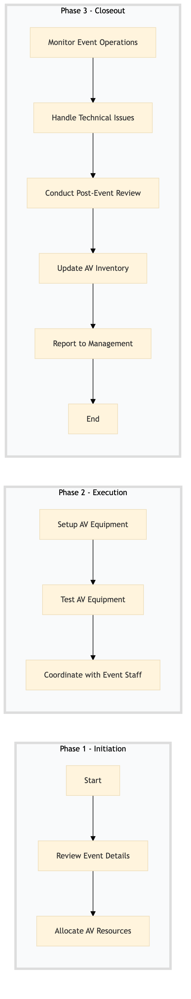

| Role | Steps |
|---|---|
| Banquet Manager | 1.1 1.2 3.3 3.5 |
| Audio-Visual Technician | 2.1 2.2 3.1 3.2 3.4 |
| Step | Name | Role | System | Input | Output | KPI | Dec? | Exc? | Pain Point / Risk |
|---|---|---|---|---|---|---|---|---|---|
| 1.1 | Review Event Details | Banquet Manager | Oracle OPERA Cloud | Event reservation details | Event plan with AV requirements | Less than 5 minutes per event review | N | Y | Inconsistent event details leading to miscommunication |
| 1.2 | Allocate AV Resources | Banquet Manager | Oracle OPERA Cloud, IDeaS G3 RMS | Event plan with AV requirements | Resource allocation list | Less than 10 minutes per event | N | Y | Overbooking of AV equipment |
| 2.1 | Setup AV Equipment | Audio-Visual Technician | Oracle OPERA Cloud, Knowcross HotSOS | Resource allocation list | AV setup checklist | Less than 30 minutes per event | N | Y | Technical issues with AV equipment |
| 2.2 | Test AV Equipment | Audio-Visual Technician | Oracle OPERA Cloud, Knowcross HotSOS | AV setup checklist | Test report | Less than 15 minutes per event | N | Y | Equipment malfunction during testing |
| 2.3 | Coordinate with Event Staff | Banquet Manager | Oracle OPERA Cloud, Book4Time | Test report | Coordination log | Less than 10 minutes per event | N | Y | Poor communication between AV team and event staff |
| 3.1 | Monitor Event Operations | Audio-Visual Technician | Oracle OPERA Cloud, Knowcross HotSOS | Event schedule | Operational log | Continuous monitoring during event | N | Y | Unexpected technical issues during the event |
| 3.2 | Handle Technical Issues | Audio-Visual Technician | Oracle OPERA Cloud, Knowcross HotSOS | Operational log | Issue resolution report | Less than 5 minutes per issue | Y | Y | Slow response to technical issues |
| 3.3 | Conduct Post-Event Review | Banquet Manager | Oracle OPERA Cloud, IDeaS G3 RMS | Operational log, issue resolution report | Post-event review document | Less than 1 hour per event | N | Y | Incomplete or inaccurate post-event reviews |
| 3.4 | Update AV Inventory | Audio-Visual Technician | Oracle OPERA Cloud, Birchstreet Procurement | Post-event review document | Updated inventory list | Less than 10 minutes per event | N | Y | Outdated AV inventory records |
| 3.5 | Report to Management | Banquet Manager | Oracle OPERA Cloud, IDeaS G3 RMS | Post-event review document | Management report | Less than 1 hour per event | N | Y | Delayed reporting to management |
This process outlines the setup and support of audio-visual equipment for banquets and events at a full-service Marriott hotel using Oracle OPERA Cloud PMS.